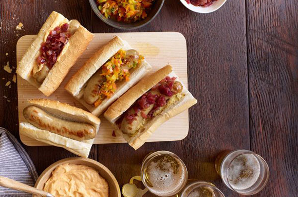

Чи варто спробувати усі сорти пива, яких у світі є надзвичайно багато? Для істинного любителя пива відповідь очевидна: так. Принаймні, варто до цього йти. А ось чи потрібно розбиратися у пивній класифікації, складній та неоднозначній до такої степені, що спеціалісти досі не можуть прийти до єдиної думки? Відповідь, також, швидше так — принаймні, спробувати, якщо ви хочете вдало підібрати страву під пиво, або пиво під страву, або ж просто пробувати не будь-що, а так, щоб смачно.
До того ж, не все так страшно і заплутано, як здається.
Пивний лікбез
- По-перше, пиво розрізняють за складом. 90% напою вариться зі злаків. Європейське пиво варять переважно із ячменю, а друге по популярності — пшеничне пиво. Для приготування напою можуть використовуватись солод (пророщений ячмінь), та інші зернові — жито, кукурудза, рис. Відомі, також, види пива, зварені із картоплі, бананів, пиво на основі молока та інші екзотичні варіанти.
- По-друге, пиво розрізняють за кольором та міцністю. Основні кольори — світле, темне, червоне, біле та змішане. Міцність же визначається за відсотком спирту у складі напою: від 3-4% у легких сортах до 11-12% у найміцніших різновидах.
- По-третє, пиво розрізняють за способом бродіння. Це, власне, і є головною загальновизнаною класифікацією. Згідно із нею, пиво ділиться на 2 типи: зварене при низьких температурах пиво низового бродіння, його, також, називають лагер, і пиво верхового бродіння, що готується при вищих температурах. Популярні типи цієї категорії — ель, портер, стаут, пшеничне пиво.
Типи пива
Світлий лагер
- До цього типу відносяться легке та стандартне американське пиво, мюнхенське світле та дортмундське світле. Смак у такого пива є свіжим, без виразної солодкавості або гіркуватості. Класичним представником цієї групи можна назвати пиво Балтика 7. І, як не дивно, представник досить якісний, інакше навряд його із успіхом експортували б у 53 країни світу.
- Світлі лагери добре підходять до салатів, морепродуктів, легких став із птиці та м'яса, а, також, овочевих наїдків. Із сирів до цього пива варто підібрати м'який коров'ячий сир, або козячий із травами
-
Температура подачі: 4,5-7°С
Пілзнер
Пілзнер — найпоширеніший тип пива лагер. До цієї категорії відносяться німецький, богемський та класичний американський пілзнери. У смаку виділяють благородну хмелеву гіркоту та характерний “пивний” аромат напою.
Класичні пілзнери дуже добре поєднуються із легкими стравами із птиці, салатами, лососем, домашніми ковбасками та сосисками на грилі, сирами типу гауди та чеддера. На десерт після страв із таким напоєм замовляють лимонні та лаймові сорбети або ніжний крем із ягодами.
Температура подачі: 4,5-7°С.
Європейський янтарний та темний лагер
До цього типу відносять березневе пиво та пиво Октоберфест, венський лагер, шварцибер, темний американський лагер та мюнхенське темне. Смак у таких лагерів м'який, можна відчути нотки підсмажених зернових, а, також, невелику хмелеву гірчинку.
Менш гіркі, ніж легкі пілзнери, янтарні типи пива смакуватимуть із основними стравами мексиканської кухні: свинина, курятина, сосиски обов'язково повинні бути приправлені спеціями та прянощами або ж подаватись із ароматними соусами. Також, таке пиво поєднується із гамбургерами та гострими закусками з чилі.
Температура подачі: 7-10°С.
Бок
Бок — загальна назва міцного німецького лагерного пива, яке у процесі виробництва доброджує до потрібної міцності у прохолодних приміщеннях. Це пиво має сильний запах солоду, навіть хлібу, із дещо підсмаженим смаком без гіркоти. У цій категорії знаходяться травневий і світлий бок, бок традиційний, доппельбок та айсбок. У темний сортах відчуваються нотки шоколаду.
Тайські та корейські барбекю — свинина, яловичина на грилі, смажена курка, гуска стануть чудовим доповненням до цього напою. Сири, навпаки, підбирають насичені, але м'які — емменталь, лімбургер. Насичені боки, також, можна поєднати із яблучним штруделем або темним шоколадним пирогом.
Температура подачі: 7-10°С.
Світле янтарне та гібридне пиво
До цієї категорії потрапляють блонд та крім ель, кельші, американське пшеничне та житнє пиво, північногерманський та дюссельдорфський альтбіри, каліфорнійський комен бір. У смаку — хмелева гіркота із помірною солодкавістю.
До таких різновидів пива подають м'ясо барбекю, сендвічі з картоплею фрі і навіть страви з дичини. Янтарне пиво відмінно поєднується із сиром чеддер.
Температура подачі: 4,5-7°С.
Шотландський та ірландський ель
До цього типу відносять легкі, міцні та експортні елі, червоний та міцний скотч ель. Залежно від типу у смаку проявляються солод, смажені горіхові відтінки, навіть легкий димний аромат.
Велика категорія та великий вибір страв — від курятини, морепродуктів та бургерів до копченого лосося, запеченої або смаженої на грилі яловичини, баранини, дичини.
Температура подачі: 10-13°С.
Американські, англійські коричневі, бельгійський та французький елі
Солодкувате, хмільне пиво із багатим, трохи фруктовим смаком, іноді нагадує квас. У цю категорію потрапляють усі південно- та північноанлійські коричневі елі, а також пейл, коричневий та янтарний американський ель. Окремо виділяють європейський вітбір, бельгійський пейл ель, сезонні напої та бір де гард.
Темні елі подають до смаженої свинини, копченим сосискам та рибі, поєднують із витриманими овечими сирами та сирами із благородною пліснявою, гаудою. Із десертів підходять банановий пиріг, солодкі страви з горіхів.
Температура подачі: 10-13°С.
Портер
Три його типи: коричневий, міцний і балтійський. Таке пиво має солодовий просмажений смак, нотки горіху та карамелі.
Дуже смачно випити портер із смаженими та копченими наїдками: м'ясом, барбекю, сосисками, запеченою бараниною або м'ясними пирогами. Із сирів варто обрати насичений коров'ячий сир, а якщо захотілось десерту — горіхове печиво.
Температура подачі: 10-13°С.
Стаут
Пиво має солодко-кремовий шоколадний присмак. Ця категорія налічує 6 різновидів: сухий, солодкий, вівсяний, форін екстра, американський та російський імператорський стаути.
Стейк, м'ясний пиріг або устриці добре підійдуть до сухих стаутів, а до солодкого та вівсяного пива вибирайте пряну їжу типу телятини барбекю із копченими соусами, жирні кремові сири. Із келихом стаута імперіал поєднують такі закуски і страви, як м'ясо гуски або качки, фуа гра. На десерт смакуватимуть витримані солодкі сири тиру пармезану та гауди, шоколадні трюфелі.
Температура подачі: 10-13°С.
Німецьке пшеничне та житнє пиво
Сюди відносяться вайцен/вайсбір, дункельвайцен, вайценбок та житній роггербір. Колір пива змінюється від світлого солом'яного до темного золотого. А м'який, із хлібними нотами смак білого пива відтіняється банановим присмаком. Житнє пиво у своєму смаку має яскраво виражені хлібні ноти.
Із таким напоєм смакуватимуть морепродукти: мідії, гребінці, рапани; якщо ж ви більше полюбляєте м'ясо — злегка обсмажені сосиски або курка. Сири також обирайте легкі — з травами, із козячого молока.
Температура подачі: 10-13°С.
5 кращих книг про пиво
Пиво. 500 великих марок. Майкл Джексон
Ні, це не відомий співак, а інший Джексон, проте не менш видатний — у пивній області. Він є автором однієї із найцікавіших та найповніших пивних енциклопедій. “Я витратив багато років, досліджуючи таємниці солоду та магію хмелю. Запрошую вас у захопливу подорож у країну смаків та ароматів. Насолодіться великими сортами… і спробуйте дуже незвичайне пиво”. Якщо вам цікаво усе про напій, і більше того — варто прочитати.
Пиво. Ілюстрована енциклопедія. DK
Гід по пивному світу, випущений виданням Дорлінг Кіндерслі, відомим своїми путівниками для мандрівок. Книга розповідає про історію походження пива, секрети пивоваріння. Книгу готувала команда спеціалістів під керівництвом того ж Джексона.
Пиво. Путівник. Олександр Петроченков
Ця унікальна книга детально розповість, з чого та як пиво вариться. У ній характеризуються популярні марки пива різних країн світу, а також дається міжнародна класифікація типів та сортів напою, приводяться основи дегустації та правильного споживання цього напою.
Пивна дієта. Вдаримо кружкою пива по зайвій вазі! Йенс Буйар
Звісно, таку книгу могли видати тільки у Німеччині. Якось Йенс розпочав рік із обіцянки схуднути самому собі. Але всі дієти виключають алкоголь, а Йенс — істинний прихильник пива. Разом зі своєю подругою Ульріке він вирішив вияснити, чи можливо втратити зайву вагу, не перестаючи час від часу тішити себе улюбленим напоєм. Зібравши результати численних досліджень, постійно радячись із лікарем-дієтологом і навіть відвідавши відому пивоварню, вони розробили власну методику схуднення, яка допоможе здобути стрункість без відмови від улюбленого напою.
Школа пива. Бруклінська пивоварня. Розливаючи успіх. Стів Хінді
Ця книга підійде і для пристрасних любителів пива, і для ентузіастів бізнесу. Її автори — підприємці Стів хінді і Тім Поттер — розповідають неймовірну сагу про бруклінську пивоварню, компанію, яка виросла із домашнього пивоваріння у крупний бізнес, причому на ринку із гострою конкуренцією.